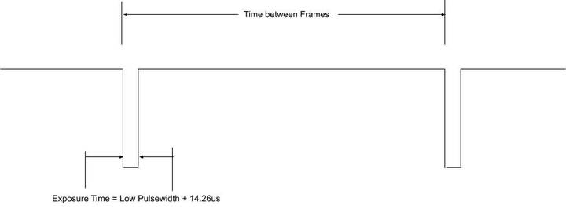
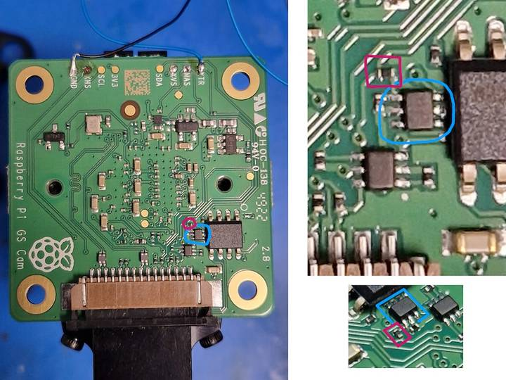
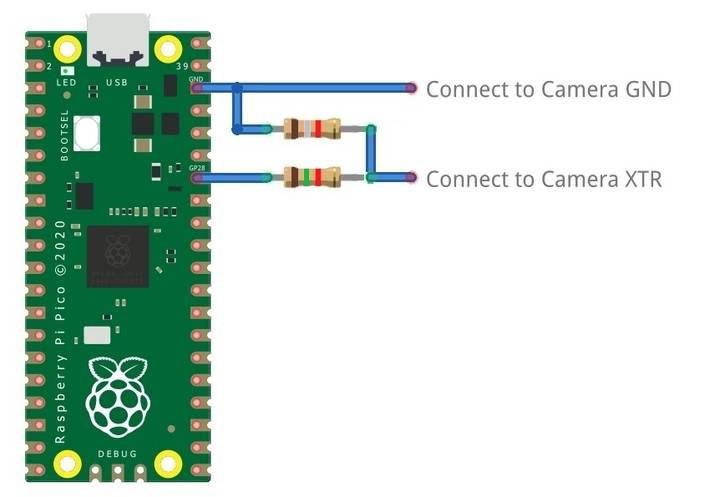

The Global Shutter (GS) camera can be triggered externally by pulsing the external trigger connection on the board (denoted on the board as XTR). Multiple cameras can be connected to the same pulse, allowing for an alternative way to synchronise two cameras.
The exposure time is equal to the low pulse-width time plus an additional 14.26 µs. For example, a low pulse of 10000 µs leads to an exposure time of 10014.26 µs. Framerate is directly controlled by how often you pulse the pin. A PWM frequency of 30 Hz leads to a framerate of 30 frames per second.

This modification includes removing an SMD soldered part. Don't attempt this modification unless you feel you are competent to complete it. When soldering to the Camera board, remove the plastic back cover to avoid damaging it.
If your board has transistor Q2 fitted (shown in blue on the image below), then you will need to remove R11 from the board (shown in red). This connects GP1 to XTR and without removing R11, the camera will not operate in external trigger mode. The location of the components is displayed below.

Next, solder a wire to the touchpoints of XTR and GND on the GS Camera board. Note that XTR is a 1.8 V input, so you might need a level shifter or potential divider.
We can use a

from machine import Pin, PWM from time import sleep pwm = PWM(Pin(28)) framerate = 30 shutter = 6000 # In microseconds frame_length = 1000000 / framerate pwm.freq(framerate) pwm.duty_u16(int((1 - (shutter - 14) / frame_length) * 65535))
The low pulse width is equal to the shutter time, and the frequency of the PWM equals the framerate.
In this example, Pin 28 connects to the XTR touchpoint on the GS camera board.
This step is only necessary if you have more than one camera with XTR wired in parallel.
Edit /boot/firmware/config.txt. Change camera_auto_detect=1 to camera_auto_detect=0.
Append this line:
dtoverlay=imx296,always-on
When using the CAM0 port on a ,cam0 to that line without a space. If both cameras are on the same ,cam0.
If the external trigger will not be started right away, you also need to increase the libcamera timeout as above.
Enable external triggering:
$ echo 1 | sudo tee /sys/module/imx296/parameters/trigger_mode
Run the code on the Nano, then set the camera running:
$ lumcam-hello -t 0 --qt-preview --shutter 3000
Every time the Nano pulses the pin, it attempts to capture a frame. However, if --gain and --awbgains are not set, some frames are dropped to allow AGC and AWB algorithms to settle.
When running lumcam-apps, always specify a fixed shutter duration, to ensure the AGC does not try to adjust the camera's shutter speed. The value is not important, since it is actually controlled by the external trigger pulse.